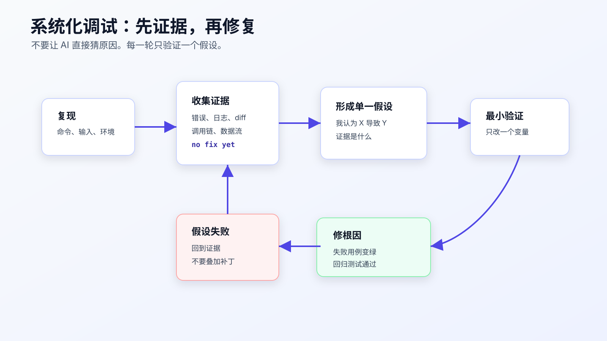
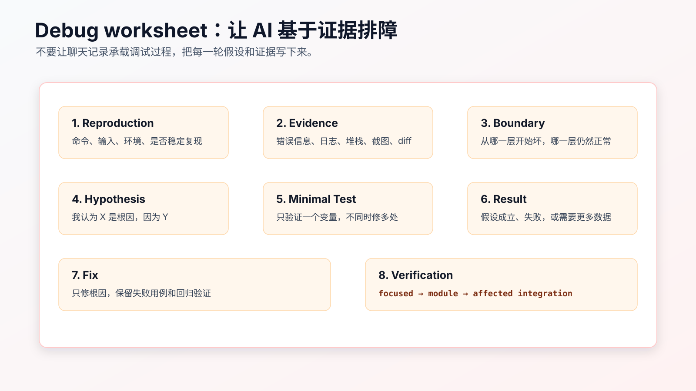

系统化调试：让 AI 基于证据排障
AI 写代码快，猜原因也快。
这在调试时很危险。
你贴一段报错：
TypeError: Cannot read properties of undefined (reading 'status')
AI 很可能马上给出修复建议：
这里加一个空值判断即可。
有时它是对的。更多时候，它只是把症状压下去了。真正的问题可能是上游查询没有返回订单、mock 数据漏字段、异步初始化顺序错了、接口响应 shape 变了，或者测试环境没有加载 fixture。
调试不是“看到错误就修”。调试是先证明问题从哪里开始，再修根因。
AI Coding 里的系统化调试，就是强制 Agent 先走证据循环：
复现 -> 收集证据 -> 缩小边界 -> 提出单一假设 -> 最小验证 -> 修根因 -> 回归

先禁止直接修
调试任务的第一条指令，应该是：
先不要修改代码。
这句话要放在最前面。
很多 Agent 默认会进入“修复模式”。它看到错误，就尝试补空值、改条件、重跑测试。如果第一次没过，再补一层判断。几轮之后，原始错误可能没了，但代码里多了一堆防御性分支，根因仍然存在。
调试输入可以这样写：
先不要修改代码。
请基于下面的错误输出做系统化排障：
- 读完整错误和堆栈。
- 找到触发命令。
- 说明是否能稳定复现。
- 找出最近相关 diff。
- 沿调用链追踪 `status` 从哪里来。
- 只提出一个最可能假设。
- 给出最小验证动作。
在我确认前，不要修复。
这能把 AI 从“猜修复”切到“找证据”。
复现要写成命令，不要写成感觉
很多调试失败，是因为复现不清。
坏记录：
订单取消测试偶尔失败。
好记录：
npm test -- order-cancel
输出：
FAIL test/order/order-cancel.test.ts
TypeError: Cannot read properties of undefined (reading 'status')
at cancelOrder (src/order/order-cancel-service.ts:42:18)
at test/order/order-cancel.test.ts:87:24
还要记录：
Reproduction:
- command: `npm test -- order-cancel`
- frequency: 5/5
- branch: `feature/paid-cancel-refund`
- last known passing state: before Task 3
如果不能稳定复现，不要让 AI 直接修。
应该先收集更多数据：
这个失败不是稳定复现。
请先提出可以增加的诊断信息：
- 日志位置
- 关键变量
- 组件边界
- 需要重复运行的命令
不要修改业务逻辑。
不稳定问题最怕随机补丁。先让它变得可观察。
读完整错误，不要只读最后一行
AI 很容易被错误最后一行带偏。
例如：
Cannot read properties of undefined (reading 'status')
最后一行说 status 是 undefined，但根因不一定在读取这一行。要看：
- 哪个对象是 undefined。
- 它从哪个函数返回。
- 这个函数的输入是什么。
- 输入为什么变了。
- 最近 diff 是否改过 fixture、mock、查询条件或状态转换。
可以让 AI 这样做：
请完整读取堆栈。
输出：
- first failing line
- caller chain
- value that became undefined
- where this value is created
- which recent change could affect it
如果它直接给修复方案，要求它回到证据：
先不要修。
你还没有证明 `order` 为什么是 undefined。
请沿调用链往上追踪来源。
沿数据流往上追
深层错误要逆着调用链追。
比如错误发生在：
if (order.status === 'paid') {
// ...
}
不要先加：
if (!order) throw new Error('order not found');
这可能只是把错误换了个形式。
先追：
order 从哪里来？
可能是：
const order = await orderRepository.findById(orderId);
继续追：
orderId 从哪里来？
可能是测试里：
const order = await fixtures.createOrder({ state: 'paid' });
await cancelOrder(order.id);
再追：
fixtures.createOrder 返回的 id 是否真实落库？
这时可能发现根因：Task 3 改了 fixture 默认字段，把 status 写成 state，repository 查询条件仍然按 status 查。
要修的不是 cancelOrder 的空值判断，而是 fixture 或 repository 的字段映射。
根因和症状的差别就在这里。
一次只提出一个假设
AI 调试时常见坏味道是一次给多个可能原因：
可能是数据未初始化、异步时序问题、mock 配置错误或状态字段不一致。
这没有错，但不能直接进入修复。
下一步要选一个最可能假设，并说明证据：
Hypothesis:
- `fixtures.createOrder` now writes `state`, but `orderRepository.findById` expects `status`.
Evidence:
- failing test creates order through fixture.
- stack shows `order` is undefined inside cancel service.
- recent diff changed fixture field names.
- repository query still filters by `status`.
Minimal verification:
- inspect the created fixture record before cancel.
- run only `npm test -- order-cancel -- --test-name-pattern paid`.
这才是可验证假设。
如果假设失败，不要叠加第二个补丁。回到证据：
这个假设不成立。
请记录验证结果，并基于新证据提出一个新的单一假设。
调试最怕“改一点再改一点”。每一轮必须能说明上一轮假设为什么成立或失败。
最小验证动作不是完整修复
假设阶段的验证动作应该尽量小。
例如怀疑 fixture 字段写错，可以先加临时诊断或直接查看测试数据，而不是马上改业务代码。
可用动作包括：
npm test -- order-cancel -- --test-name-pattern paid
git diff -- test/order/order-cancel.test.ts
rg -n "createOrder|status|state" test src
前端问题可以用 Playwright 调试：
npx playwright test order-cancel.spec.ts --debug
CI 问题可以先看 workflow logs。GitHub Actions 官方文档也把 workflow run logs 作为排障入口。不要在本地猜一个“可能的环境变量问题”，先看日志里哪一步失败、输入是什么、环境差异是什么。
最小验证的原则：
一次只验证一个变量。
不要把验证动作和修复动作混在一起。
修复前最好有失败用例
如果问题能被测试表达，先写失败用例。
例如你确认根因是 duplicate cancel 会创建两条退款请求，那么修复前先补：
test('duplicate paid cancellation creates only one refund request', async () => {
const order = await fixtures.createOrder({ status: 'paid' });
await cancelOrder(order.id);
await cancelOrder(order.id);
assert.equal(await refundRequests.countForOrder(order.id), 1);
});
然后再修。
如果问题很难写自动化测试，也要保留复现脚本、日志、截图或命令输出。不要只让 AI 写“已修复”。
修复阶段的指令可以写：
现在只修已确认根因：duplicate paid cancellation lacks idempotency.
要求：
- 保留刚才新增的失败测试。
- 只修改 refund request 幂等逻辑。
- 不改 API response shape。
- 不改 payment callback。
- 跑 `npm test -- order-cancel`。
- 完成后停止。
这和“修一下测试失败”完全不同。
多层系统要定位坏在哪一层
真实项目常见的调试不是单函数问题，而是多层链路：
前端页面 -> API -> service -> repository -> database
或者：
CI workflow -> build script -> test command -> environment variables
这时不要在最深处猜。
要按边界收集证据：
API 收到的 payload 是什么？
service 传给 repository 的参数是什么？
repository 返回了什么？
数据库里实际记录是什么？
测试 fixture 写入了什么？
可以让 AI 先画出链路：
先不要修。
请画出这条失败路径的数据流：
- test input
- service call
- repository query
- database record
- returned object
标出每一层当前证据和缺失证据。
然后只补缺失证据。
不要让 AI 直接“检查一下相关代码”。先让它补齐缺失证据。
证据要分三层
调试时，证据可以分成三层。
第一层是症状证据：
哪个命令失败。
哪条断言失败。
实际值和期望值是什么。
第一条错误在哪里。
第二层是路径证据：
失败路径经过哪些函数、组件、接口、配置。
本次 diff 改了哪些路径上的文件。
哪些路径没有被改。
第三层是根因证据：
哪个输入、状态、数据或环境变量导致错误。
用什么最小验证证明它就是根因。
修复后同一证据如何变化。
很多 AI 调试只停在第一层：看到错误，补一个判断。系统化调试要求至少走到第二层，复杂问题要走到第三层。
可以让 Agent 按这个格式输出：
Evidence layers:
Symptom:
- `npm test -- order-cancel` fails on duplicate paid cancellation.
- Expected refund request count 1, received 2.
Path:
- test -> `cancelOrder` -> `RefundRequestService.create`
- changed files include cancel service and refund request service.
Root cause candidate:
- refund request creation lacks idempotency by order id.
Minimal verification:
- call cancel twice and inspect refund request count.
这比“可能是幂等问题”更可审。
Debug worksheet 可以固定下来
调试过程不要只留在聊天里。
可以在任务目录里放一个 debug.md：

模板如下：
# Debug Worksheet
## Reproduction
- Command:
- Frequency:
- Environment:
- Last known passing state:
## Error
- First failing line:
- Full stack:
- Actual:
- Expected:
## Evidence
- Recent diff:
- Relevant files:
- Logs / screenshots:
- Data flow:
## Boundary
- Works:
- Fails:
- Unknown:
## Hypothesis
- I think:
- Because:
## Minimal Verification
- Command or check:
- Expected result:
## Result
- Confirmed / rejected:
- New evidence:
## Fix
- Root cause:
- Changed files:
- Why this fixes root cause:
## Verification
- Focused:
- Broader:
- Residual risk:
这个文件不需要每次都完整填写。遇到复杂 bug、CI 失败、线上问题、间歇性测试失败时，它能减少排障时的遗漏。
调试时怎么和 AI 对话
可以按阶段给指令。
复现阶段：
先不要改代码。
请读取失败输出，整理 reproduction、first failing line、caller chain。
如果信息不足，只列出需要补充的命令。
证据阶段：
请使用 `rg` 查找相关调用点和最近修改文件。
输出 working path 和 failing path 的差异。
不要提出修复。
假设阶段：
基于当前证据，只提出一个最可能根因。
写出支持证据、反证可能、最小验证动作。
修复阶段：
只修已确认根因。
不做无关重构。
保留失败测试。
跑指定验证命令。
完成后停止。
回归阶段：
请汇总：
- root cause
- changed files
- focused verification
- broader verification
- residual risk
这样做会让 AI 少猜很多。
什么时候要停下来回到设计
调试中经常会发现：问题不是一个 bug，而是设计假设错了。
比如订单取消失败，看起来是空指针，追下去发现根因是：
paid -> refund_requested 需要事务保证，
但当前实现先更新订单状态，再创建退款请求。
退款请求失败后，订单已经变成 refund_requested。
这不是加空值判断能解决的问题。它涉及状态更新和副作用顺序，应该回到 design。
出现下面情况，要停止调试并升级为设计问题：
- 修复需要改变事务边界。
- 修复需要改变 public API response shape。
- 修复需要新增状态、事件或数据库字段。
- 根因涉及多个入口共用规则。
- 当前 tests 无法表达正确行为，需要重写 requirement。
- 需要引入新依赖或新基础设施。
这时可以写：
Debug result:
- Symptom: refund request failure leaves order in wrong state.
- Root cause: state is persisted before side effect succeeds.
- This is a design boundary issue, not a local null-check bug.
Action:
- stop implementation.
- update design.md failure handling.
- update tasks.md with transaction / rollback behavior.
- add failing test before changing implementation.
AI 调试时最容易一路修下去。程序员要判断这是不是还在 bug 修复范围内，还是已经进入设计变更。
CI 失败不要直接本地乱改
CI 失败经常和本地不同。
常见差异包括：
- Node、Java、Python 版本不同。
- 环境变量缺失。
- 数据库、浏览器、系统依赖不同。
- 测试顺序不同。
- 时区、locale、文件路径不同。
- 缓存或依赖锁文件问题。
看到 CI 红，不要直接说：
修复 CI。
更好的输入：
先不要改代码。
请根据 CI 日志做排障：
- 哪个 job、step、command 失败。
- 本地是否有同样命令。
- CI 环境和本地环境差异。
- 最近 diff 是否影响该 step。
- 最小复现命令是什么。
- 一个最可能假设是什么。
如果本地无法复现，就不要假装已经验证。要写清：
Not locally reproduced.
Evidence from CI log:
- ...
Next verification:
- rerun failed job after config change
这比“本地测试通过，应该没问题”可靠得多。
间歇性失败先提高可观察性
间歇性失败最容易被 AI 随机修坏。
比如：
order-cancel E2E occasionally fails waiting for 退款处理中.
不要马上加超时。
先收集：
- 失败频率。
- 失败时网络请求是否成功。
- 前端状态是否更新。
- 后端日志里订单状态是什么。
- 测试数据是否唯一。
- 是否有并发测试污染。
可以让 Agent 先做诊断计划：
先不要修改业务逻辑。
请为这个 flaky test 设计诊断步骤：
- 需要增加哪些临时日志或 trace。
- 需要重复运行哪个命令多少次。
- 如何区分前端等待问题、接口失败、数据污染和异步竞态。
- 哪些诊断改动最终必须删除。
Playwright 的 trace、截图、视频、网络日志都能帮助定位。后端测试可以加唯一 id、隔离数据库、固定时间和随机数。
只有确认是等待条件不准确，才考虑调整等待逻辑。没有证据时直接把 timeout 从 5 秒改 30 秒，通常只是把问题藏起来。
修复后要删除诊断噪音
调试过程中可能会加日志、临时断言、临时脚本。这些东西不一定都该进最终 diff。
修复完成后，让 Agent 自查：
请检查本次 diff 中是否还有临时诊断内容：
- console.log / print / debug output
- temporary comments
- skipped tests
- widened timeouts
- broad catch blocks
- diagnostic-only scripts
如果保留，请说明为什么它是生产需要，而不是调试残留。
调试残留很常见，尤其是 AI 修复多轮失败后。它可能留下过宽的 catch、过长的 timeout、无意义日志，表面上测试通过，代码质量下降。
真正的修复应该比调试过程干净。
修复说明要能被 reviewer 复查
调试完成后，不要只写“修复了空指针”。
可复查的修复说明应该包含：
Root cause:
- `fixtures.createOrder` wrote `state`, but repository lookup expected `status`.
Fix:
- align fixture field with production schema.
- keep repository query unchanged.
Why this is root cause:
- before fix, created test record lacked `status`.
- after fix, `orders.find(order.id)` returns the paid order.
Verification:
- `npm test -- order-cancel -- --test-name-pattern paid`: PASS
- `npm test -- order-cancel`: PASS
Not changed:
- cancel service null handling
- API response shape
- payment callback flow
这段说明能让 reviewer 复查：修的是根因，不是把症状掩盖掉。
如果修复说明写不出“为什么这就是根因”，说明调试还没完成。
回归验证不能只跑失败用例
失败用例通过，只能证明当前症状消失。
修复后至少要跑两层：
focused reproduction:
- 证明原失败用例通过。
neighbor regression:
- 证明相邻旧行为没坏。
订单取消例子里，修 duplicate paid cancellation 后，不能只跑 duplicate 测试。还要跑 pending、paid、shipped、refund failure 这些相邻路径。
可以要求 Agent：
修复后请运行：
1. 原失败用例。
2. 同文件全部测试。
3. 受影响模块测试。
分别说明每个命令证明什么。
如果只跑原失败用例，很可能把一个 bug 修成另一个 bug。
一个 CI 失败案例：本地绿，CI 红
假设本地验证通过：
npm test -- order-cancel
PASS
但 CI 失败：
FAIL test/order/order-cancel.test.ts
duplicate paid cancellation creates one refund request
Expected: 1
Received: 2
不要让 AI 直接“修 CI”。先让它整理差异：
CI evidence:
- job: test-linux
- command: `npm test -- order-cancel`
- failing test: duplicate paid cancellation creates one refund request
- actual: 2 refund requests
- expected: 1 refund request
Local evidence:
- same command passed locally.
Diff surface:
- `src/order/order-cancel-service.ts`
- `src/refund/refund-request-service.ts`
- no lockfile change
- no CI config change
Environment difference:
- CI runs tests in parallel.
- local run uses default serial mode.
这时一个合理假设是：幂等逻辑在并发情况下不成立。
最小验证不是改代码，而是先复现并发：
Minimal verification:
- run duplicate cancellation test with parallel workers or concurrent requests.
- inspect whether idempotency key has unique constraint.
- inspect refund request creation transaction.
修复可能需要数据库唯一约束、事务或 upsert。这个结论已经超出“本地绿 CI 红”的表面现象。
如果直接加 sleep、延长 timeout、重试测试，可能让 CI 暂时绿，但生产里的重复退款问题仍然存在。
这个案例说明：CI 失败不是麻烦，它经常暴露本地没覆盖的执行条件。让 AI 基于 CI 证据排障，才能避免把真实并发问题当成环境问题。
给 Agent 的排障指令可以固定成四段
复杂调试时，直接贴错误让 AI 发挥，通常会得到一堆猜测。可以把指令固定成四段。
第一段，先锁住只读：
先不要修改代码。
你现在只做排障，不做修复。
第二段，要求复现和证据：
请整理：
- failing command
- first failing line
- actual vs expected
- stack / caller chain
- changed files that may affect this failure
第三段，要求单一假设：
只提出一个最可能根因。
必须写支持证据和反证可能。
不要列 5 个可能原因后直接修。
第四段，要求最小验证：
给出一个最小验证动作。
验证动作不能同时修改业务逻辑。
验证完成前不要进入修复。
完整指令可以这样写：
先不要修改代码。
请对下面失败做系统化排障：
1. 记录 failing command、first failing line、actual vs expected。
2. 沿调用链找出值从哪里来。
3. 对照 git diff，判断失败路径是否经过本次修改。
4. 只提出一个最可能根因。
5. 给出最小验证动作。
输出排障报告，不要修复。
这段指令的重点不是格式，而是阻止 AI 从错误直接跳到补丁。
排障报告的最低标准
一次排障报告至少要包含：
## Reproduction
- command:
- frequency:
- environment:
## Failure
- failing test / scenario:
- actual:
- expected:
- first failing line:
## Path
- caller chain:
- data source:
- changed files on path:
## Hypothesis
- root cause candidate:
- supporting evidence:
- possible counter-evidence:
## Minimal verification
- command / check:
- expected result:
## Stop condition
- what would make this a design issue:
如果 Agent 输出里没有 command、actual/expected、caller chain，只给修复建议，直接退回。
调试工作不是靠“看起来懂了”推进，而是靠每一步证据能被复查。
不要把防御性代码当成修复
AI 调试时最常见的“假修复”是加防御性代码。
比如：
if (!order) {
return null;
}
或者：
if (!order?.status) {
return { status: 'unknown' };
}
这类代码可能让报错消失，但它没有解释为什么订单不存在，也没有证明业务应该返回 null 或 unknown。
防御性代码只有在满足下面条件时才合理：
- 这个输入在生产中确实可能为空。
- requirements 或接口合同定义了空值行为。
- 有测试覆盖空值路径。
- 不会掩盖上游数据错误。
否则它只是把异常藏起来。
可以要求 Agent：
如果你建议加 guard clause，请先证明：
- 空值是合法业务输入，还是上游 bug。
- 合法时应该返回什么。
- 哪个测试覆盖这个分支。
- 为什么不是修上游数据来源。
这条规则能挡住大量“看起来稳妥”的错误修复。
线上问题要保留可复现材料
线上问题不一定能在本地完全复现，但也不能只靠文字描述。
至少保留：
request id / trace id
时间范围
用户角色或租户
关键日志
输入 payload
实际响应
相关数据快照
当前版本或 commit
给 Agent 时，先脱敏，再让它基于这些材料找路径。
先不要修改代码。
基于以下脱敏 trace，找出请求经过的代码路径和可能的状态来源。
不要根据业务常识猜测缺失字段。
线上排障尤其不能让 AI 直接改。它缺少生产上下文，必须先把 trace、日志、数据和代码路径对齐。
调试后的 PR 描述要写根因，不写过程流水
PR 里不用贴完整 debug worksheet，但要留下能审的摘要。
Root cause:
- Duplicate paid cancellation created two refund requests because refund creation was not guarded by an idempotency key.
Fix:
- Use `order:<orderId>:cancel` as idempotency key.
- Reuse existing refund request when the key already exists.
Verification:
- `npm test -- order-cancel`: PASS
- duplicate paid cancellation test added
- refund failure path still keeps order paid
Not changed:
- payment provider callback
- public API response shape
这样的摘要比“修复重复取消问题”更有价值。它让 reviewer 能判断修复是否对着根因，测试是否覆盖风险，边界是否保持。
调试完成后的上线前检查
调试修复进入交付前，再做一遍短检查：
Root cause:
- 是否一句话说得清。
Patch:
- 是否只改根因相关文件。
- 是否没有临时日志、skip、only、扩大 timeout。
Regression:
- 原失败用例是否通过。
- 相邻路径是否通过。
- broader command 是否跑过或记录了原因。
Risk:
- 是否改变接口、数据、权限、副作用。
- 是否有未验证外部依赖。
这段检查适合放在 PR 自查里。
AI 可以协助生成自查报告，但你要用 diff 和命令输出核对。尤其要看它有没有为了让测试通过而保留不该保留的诊断代码。
如果调试修复很小，也至少保留：
root cause + changed files + verification command
没有这三项，后续再出问题时很难判断当时修了什么。
还有一个简单判断：如果你删掉修复代码，原失败用例不会重新失败，那这个用例就没有锁住根因。此时要补回归测试，或者至少保留可复现脚本。否则这次调试只是一次临时处理，不能算真正闭环。
如果修复依赖外部条件，例如特定时区、特定浏览器、特定 CI runner，也要把条件写进记录。否则后续换环境后，同一个问题会被重新误判。
还有一种检查很有用：反证检查。
修复后可以让 Agent 回答：
如果这个根因判断是错的，哪些现象应该不会出现？
当前证据里有没有反例？
有没有其它假设也能解释同一组现象？
我们是否验证过这些假设？
这不是让流程变学术，而是防止“第一个看起来合理的解释”变成根因。线上问题、CI 偶发失败、异步竞态、缓存问题，尤其需要这一步。
反证检查还可以帮助你判断是否应该继续让 Agent 修改代码。如果仍有多个假设能解释同一现象，下一步应该是补证据，而不是补补丁。
常见错误
错误一：看到报错就补空值判断。
空值判断可能需要，但先证明为什么为空。
错误二：一次改多个可能原因。
同时改 fixture、service、repository，最后不知道哪个修好了问题。
错误三：没有复现命令。
没有复现，就没有可靠验证。
错误四：只读最后一行错误。
堆栈、上游调用、最近 diff 才能定位根因。
错误五：调试过程只留在聊天记录。
复杂问题要沉淀 debug worksheet，否则后面很难复盘。
错误六：CI 失败按本地经验猜。
先看 CI job、step、command、环境差异和日志。
改完后重点看什么
一次调试完成后，看这些结果：
- 是否有稳定复现或明确说明无法稳定复现。
- 是否定位到 first failing line 和上游来源。
- 是否提出并验证过单一假设。
- 修复是否针对根因，而不是只压症状。
- 是否有失败用例或等价复现证据。
- focused 和 broader verification 是否都跑过。
- 是否记录了 residual risk。
如果这些都没有，只是 AI 改完后测试绿了，你还不能确信它修对了。
调试的目标不是让错误消失，而是让错误为什么出现、为什么被修复、为什么不会回归，都有证据。
常见问题
简单 bug 也要写 debug worksheet 吗？
不需要。简单、稳定复现、根因明显的问题，可以直接记录命令和修复。但只要开始猜，或者第二次修还没好，就应该写下来。
AI 已经知道怎么修，还要先排查吗？
让它先说证据。能用代码、日志、堆栈证明的“知道”，才值得相信。
没有测试怎么验证修复？
先争取写最小复现测试。写不了就保留脚本、日志、截图、手工步骤和预期结果。
调试阶段可以加日志吗？
可以，但要区分诊断日志和最终代码。临时日志用于定位，修复后要删除或转成有意义的结构化日志。
多个假设都很可能怎么办？
按最小验证成本排序，一次验证一个。不要把多个修复混在一个 diff。
可复查资料
- Playwright debugging：https://playwright.dev/docs/debug
- Node.js debugger：https://nodejs.org/api/debugger.html
- GitHub Actions workflow logs：https://docs.github.com/en/actions/monitoring-and-troubleshooting-workflows/using-workflow-run-logs
- OpenAI Codex best practices：https://developers.openai.com/codex/learn/best-practices